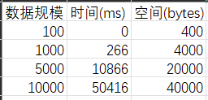
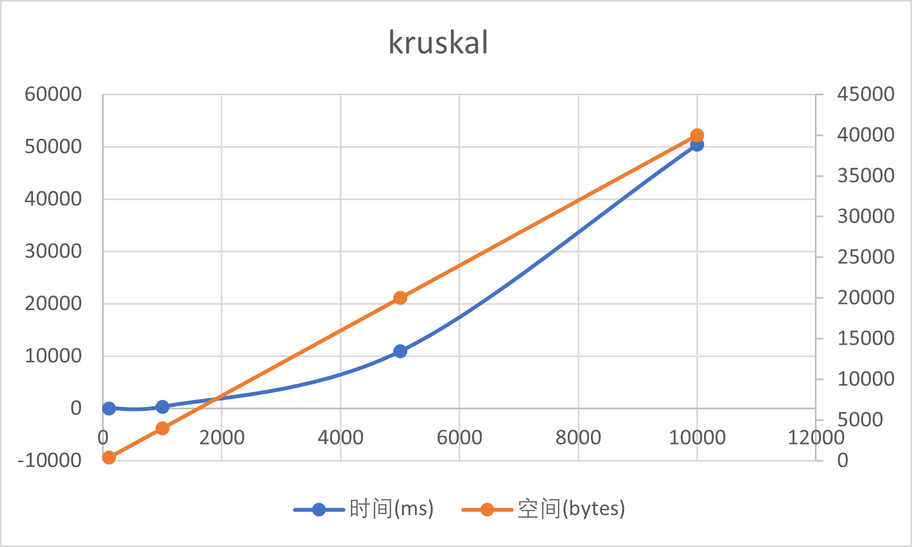
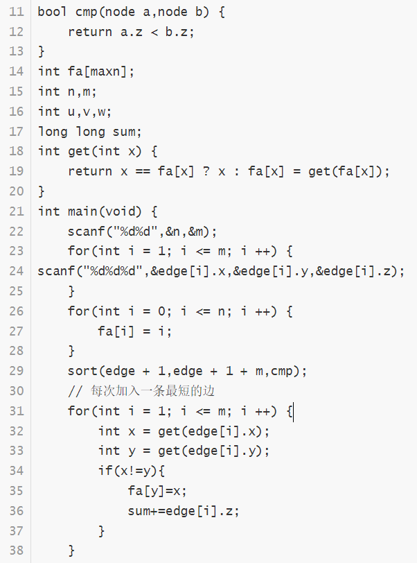
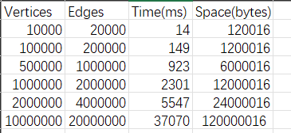
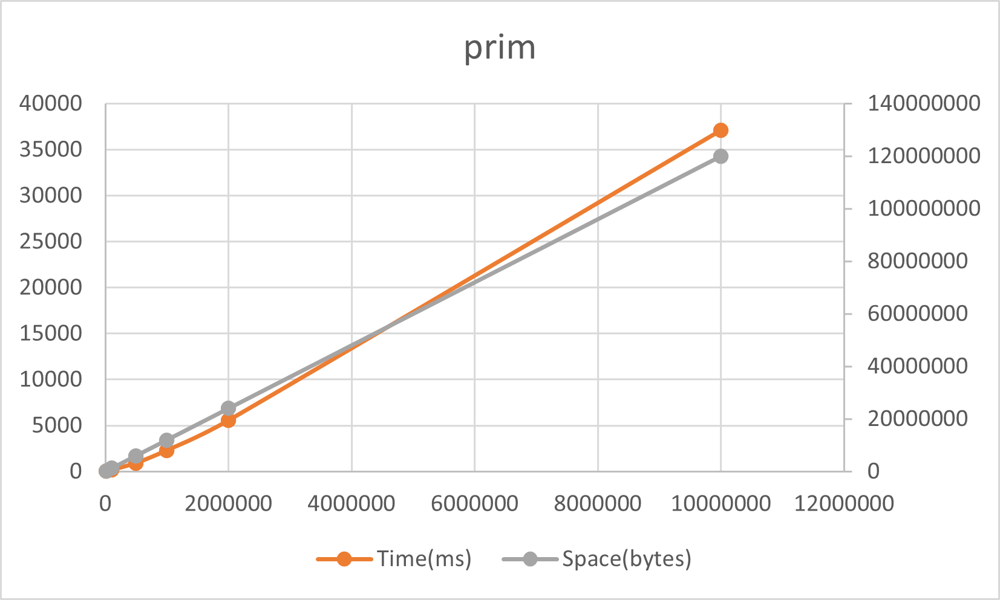

kruskal
所谓最小生成树，就是图中若干边的集合（我们后文称这个集合为 mst，最小生成树的英文缩写），你要保证这些边：
1、包含图中的所有节点。
2、形成的结构是树结构（即不存在环）。
3、权重和最小。
通过随机生成数据进行测试可得如下结果：
待排序数组数据规模分别取一百，一千，五千，一万随机产生十次实验，计算时间平均值，时间复杂度O（V+E）α（V），空间复杂度为O(|V|+|E|)


主要代码展示

priml
用两个集合A{}，B{}分别表示找到的点集，和未找到的点集；
我们以A中的点为起点a，在B中找一个点为终点b，这两个点构成的边（a，b）的权值是其余边中最小的
重复上述步骤#2，直至B中的点集为空，A中的点集为满
通过随机生成数据进行测试可得如下结果：
待排序数组数据规模分别取一万，十万，五十万，一百万，两百万随机产生十次实验，计算时间平均值，时间复杂度是，空间复杂度为O(|V|+|E|)


主要代码展示